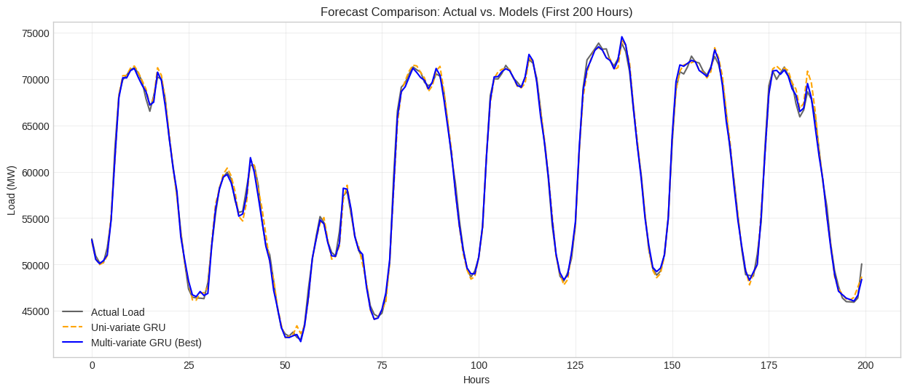

Deep learning · Time-series forecasting
Electricity Load Forecasting
A controlled study of LSTM, GRU, and Temporal Convolutional Networks for predicting Germany's next hour of electricity demand—and testing whether renewable-generation context improves the forecast.
Verified resultThe multivariate GRU reached 463.21 MW MAE in the final tuned comparison—a 16.51% improvement over the load-only GRU.
- Context
- Academic team project
- Team
- Four students
- Forecast
- Next hour
- Tools
- Python, TensorFlow, Keras, Pandas, scikit-learn
Predict Germany's electricity demand one hour in advance.
A Python pipeline that converted 50,401 hourly records into 24-hour input windows and trained LSTM, GRU, and TCN forecasting models.
The multivariate GRU reached 463.21 MW MAE and improved 16.51% over the same GRU trained only on past electrical load.
Actual demand versus forecast
The blue line is the multivariate GRU prediction. It used past load, wind generation, solar generation, and calendar features; the orange line used past load only.

Data, models, and feature comparison
The same next-hour prediction task was used throughout so the architectures and input features could be compared directly.
Model results and limitations
| Final model | MAE | RMSE |
|---|---|---|
| Optimized LSTM | 771.94 MW | 955.39 MW |
| Multivariate GRU | 463.21 MW | 600.71 MW |
| Optimized TCN | 514.50 MW | 666.71 MW |
Important limitation
An earlier manually configured TCN produced a lower test error than the final tuned models. Because the test set was viewed during experimentation, the project cannot make a definitive claim that the GRU is the best architecture. A stronger follow-up would use walk-forward validation, a seasonal-naive baseline, split-local imputation, and one untouched final test period.
This was a collaborative four-person academic project covering data preparation, TensorFlow modeling, hyperparameter experiments, evaluation, and reporting. Every metric shown here comes from the submitted notebook.